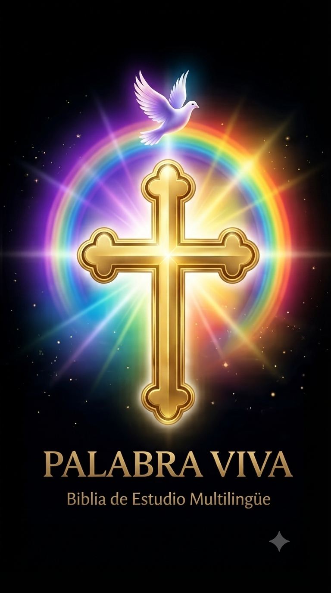
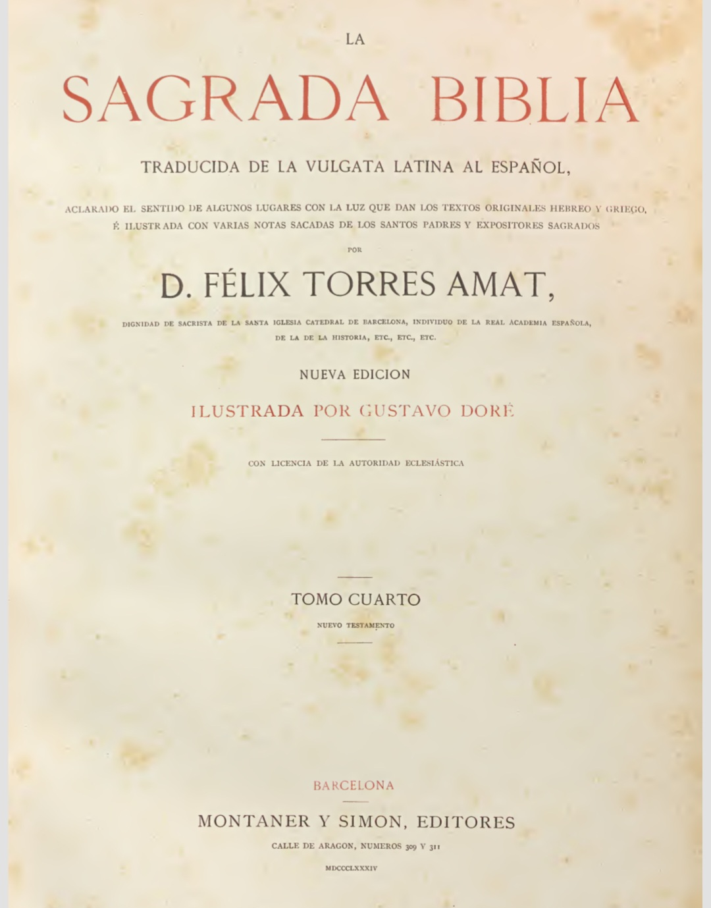

📜 Antiguo Testamento
Explorar los libros históricos, poéticos y proféticos.
✨ Nuevo Testamento
Explorar los Evangelios, cartas y Apocalipsis.

Seleccioná un testamento para comenzar.
Explorar los libros históricos, poéticos y proféticos.
Explorar los Evangelios, cartas y Apocalipsis.
Seleccioná un libro para continuar.
Seleccioná un capítulo para leer.
Texto de las Escrituras
Seleccioná un libro para continuar.
¿Cómo está tu corazón hoy?
"Reconocer Su presencia en los pequeños detalles del día, como el calor de la familia, es el primer paso para contemplar Su gracia obrando en nosotros."
El hilo conductor de la Divina Revelación: desde el principio eterno hasta Pentecostés.
Itinerario de la Revelación
De la oscuridad a la luz
Los resultados de tu búsqueda aparecerán aquí.
Recursos recomendados para profundizar en el estudio y la lectura:
Canal de Reflexión en YouTube Explorá contenidos audiovisuales, transmisiones y charlas inspiradoras oficiales. Magisterium AI - Asistente de Estudio Herramienta de inteligencia artificial orientada a la consulta de documentos eclesiásticos. Biblioteca y Recursos Abiertos - Magisterio Documentos oficiales, encíclicas y escritos fundamentales de la Iglesia. Archivo y Textos de Estudio Recursos complementarios de apoyo para la lectura doctrinal y litúrgica.Palabra Viva nace para servir a Jesucristo, que es el Camino, la Verdad y la Vida. Deseamos ayudar a que todas las personas puedan acercarse a la Sagrada Escritura, comprenderla con seriedad, orarla con fe y llevarla a la vida cotidiana.
Nuestro proposito
Ofrecer un espacio sencillo y confiable para encontrarse con la Palabra de Dios, meditarla con fe y descubrir cómo puede iluminar la vida de cada día.
Tu intimidad merece respeto
Tu camino espiritual es personal y libre. Por eso, Palabra Viva no solicita datos personales, no realiza seguimiento de tu ubicación ni utiliza cookies de rastreo. Tus datos y preferencias se almacenan exclusivamente en tu dispositivo. Aquí no hay vigilancia: solo un espacio de encuentro.
Un puente hacia la comunidad
Somos una iniciativa laical en constante revisión y discernimiento. No pretendemos reemplazar la vida parroquial ni el acompañamiento de los pastores; al contrario, deseamos ser un puente humilde que te acerque a Cristo, a la Iglesia, a sus sacramentos y a la comunidad que te recibe.
Todo lo que hacemos es para Él.
© 2026 Palabra Viva

Esta obra y su itinerario espiritual están bajo una licencia internacional Creative Commons Atribución-NoComercial-CompartirIgual (CC BY-NC-SA 4.0). Eres libre de copiar, distribuir y comunicar públicamente este contenido mencionando la autoría original, sin fines comerciales y bajo los mismos términos.
Las citas bíblicas, textos de la Torá, el Tanaj y documentos del Magisterio se integran con fines pastorales y litúrgicos, respetando los derechos de sus fuentes editoriales.
Versión de estudio: En Palabra Viva se ofrece la traducción de la Sagrada Biblia de Félix Torres Amat, publicada originalmente en el siglo XIX y basada en la Vulgata Latina.
Portadas y facsímiles históricos:

Volume IV (New Testament)
Consultar el ejemplar digitalizado completo en Internet Archive